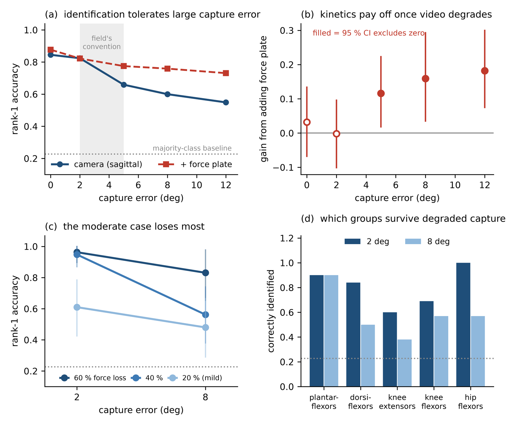
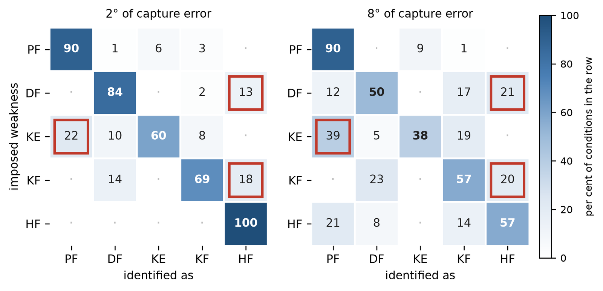

Clinical biomechanics · predictive simulation · Submitted to Journal of Biomechanics, November 2026
Motion capture is usually judged by its measurement error. This study judged it by a decision: in forward-dynamic gait simulation, where the weak muscle group is known, can that group still be identified once joint-angle error is added? Rank-1 identification fell from 0.845 at 0° to 0.549 at 12° and stayed above twice the majority-class baseline of 0.227, but mild (20 %) weakness was identified at only 0.610 even at 2°. Everything here is simulation; nothing was measured in patients.
Mu-Hua Wang · National Yang Ming Chiao Tung University · first author, with Hui-Ting Shih (advisor and corresponding author)
Healthy gait (left) and 60 % plantarflexor weakness of the left limb (right), base model variant (strength factor 1.00), on a shared clock. Muscle colour is activation, from quiet to maximal; the arrow is the ground reaction force; the lower panels are ankle angles. One condition, chosen as the clearest example: not a statistic.
The same layout for the other four muscle groups. Each clip is one condition from the base model variant, at 60 % force loss except the knee flexors at 40 %, shown beside healthy gait from the same variant. These are examples, not a statistic; the analysis below uses 66 conditions.
Dorsiflexors, 60 % force loss.
Knee extensors, 60 % force loss.
Knee flexors, 40 % force loss.
Hip flexors, 60 % force loss.
Rank-1 accuracy is the proportion of conditions in which the weakened group was ranked first of five. The reference is the majority-class baseline, 0.227 (rank-3: 0.667).
camera feature set, 66 conditions; baseline 0.227
25 conditions; 0.963 and 0.948 for 60 % and 40 %
95 % t interval [+0.035, +0.293] over five variants

Figure 1 of the paper. (a) Accuracy against capture error; the shaded band is the 2–5° convention. (b) Gain from adding ground reaction force, with 95 % t intervals over the five model variants. (c) By severity. (d) By muscle group.
| Capture error | Rank-1, four captures pooled (reported) | Rank-1, one capture |
|---|---|---|
| 0° | 0.845 | 0.845 |
| 2° | 0.824 | 0.767 |
| 5° | 0.659 | 0.643 |
| 8° | 0.600 | 0.553 |
| 12° | 0.549 | 0.504 |
Each reported decision averages the predicted probabilities over four independent error samples of the same condition. The one-capture column is what a single recording gives.
The traces are the simulated ankle angles of a 60 % plantarflexor condition, 200 samples over the analysis window, for both limbs. The slider adds zero-mean Gaussian error at the five levels the study measured, independently on each side, as the study does. The readout is the measured accuracy at that level, not an interpolation.
Solid: the weakened ankle. Faint: the sound ankle. The error is seeded, so the traces are stable while you move the slider.
Measured at 0, 2, 5, 8 and 12°: 0.845, 0.824, 0.659, 0.600 and 0.549. Majority-class baseline 0.227.
The difference between the two sides carries the deficit, and each side receives its own error, so the error widens or narrows that difference at random. At 12° the classifier still ranks the weakened group first in 0.549 of conditions, against a baseline of 0.227.
| Force loss | Rank-1 at 2° (95 % CI) | Rank-1 at 8° (95 % CI) | Loss, 2° → 8° | Rank-3 at 2° / 8° | N |
|---|---|---|---|---|---|
| 60 % | 0.963 [0.897, 1.000] | 0.831 [0.654, 0.978] | 0.132 | 1.000 / 1.000 | 17 |
| 40 % | 0.948 [0.870, 1.000] | 0.562 [0.380, 0.740] | 0.385 | 1.000 / 0.958 | 24 |
| 20 % | 0.610 [0.425, 0.785] | 0.480 [0.290, 0.665] | 0.130 | 0.970 / 0.855 | 25 |
The severity difference is inconclusive at this power. The 40 % loss is the largest observed and the ordering holds in four of the five model variants, but with five variants it is not statistically separable from the other two. Intervals are descriptive, bootstrapped over conditions within each severity.
For mild weakness the correct group was still within the top three in 0.970 of conditions at 2° and 0.855 at 8°, so gait narrows the candidates rather than naming one.
| Capture error | Gain from adding GRF | 95 % t interval, five variants | Excludes 0 |
|---|---|---|---|
| 0° | +0.032 | [−0.068, +0.134] | no |
| 2° | −0.002 | [−0.101, +0.096] | no |
| 5° | +0.116 | [+0.018, +0.223] | yes |
| 8° | +0.159 | [+0.035, +0.293] | yes |
| 12° | +0.182 | [+0.075, +0.300] | yes |
At 0° and 2° a gain was not detected at this power; that is not evidence that the force plate adds nothing.
Six timing features in the camera set derive from vertical ground reaction force in this model, which a camera alone would not supply. The 27 purely kinematic features score 0.824, 0.875, 0.742, 0.623 and 0.536 at 0, 2, 5, 8 and 12°, and against the better of the two camera-only sets the 5° gain falls to +0.033, about twice the 0.015 that one condition changing its answer would move. 8° is the first level at which the gain holds under every way of drawing the sets; it is the level this design supports, not a purchasing threshold.
| Weakened group | Rank-1 at 2° | Rank-1 at 8° |
|---|---|---|
| Plantarflexors | 0.90 | 0.90 |
| Dorsiflexors | 0.84 | 0.50 |
| Knee extensors | 0.60 | 0.38 |
| Knee flexors | 0.69 | 0.57 |
| Hip flexors | 1.00 | 0.57 |
Knee extensors, 60 %: the group most often mistaken.
Plantarflexors, 60 %: what it was mistaken for.
The most frequent mistake at 2°, side by side: knee extensor weakness identified as plantarflexor weakness in 22 % of knee-extensor conditions. Both groups take part in stance-phase limb support and terminal-stance control. Base model variant, one condition each: not a statistic.

Figure 3 of the paper. Per cent of the conditions in each row. At 2° the most frequent mistake was knee extensors identified as plantarflexors (22 %). The off-diagonal pattern at 2° correlated with the pattern at 5, 8 and 12° (Spearman ρ = 0.65, 0.73 and 0.55).
The convention from the reliability literature treats 2° or less as acceptable, 2–5° as possibly requiring consideration and more than 5° as possibly misleading clinical interpretation (McGinley et al. 2009). Its degrees are between-session standard deviations; the degrees on this page are waveform-level RMS error. With a constant offset alone, the closest analogue of between-session error, rank-1 accuracy was 0.735 at 5° and 0.722 at 12°, against 0.654 and 0.533 for white noise in the same runs. A structured error (offset, drift and jitter) at the same total RMS gave accuracy within 0.04 of white noise from 3° to 20°.
| Source | What it reports |
|---|---|
| McGinley et al. 2009 | The convention: 2° or less acceptable, 2–5° possibly requiring consideration, more than 5° possibly misleading clinical interpretation. Derived from between-session reliability of marker-based capture. |
| Uhlrich et al. 2023 | OpenCap smartphone capture: 4.5° mean absolute error over eighteen degrees of freedom and four activities, ten healthy adults. |
| Horsak et al. 2023 | Smartphone markerless capture, normal gait plus imitated crouch, circumduction and equinus gait, 21 healthy volunteers: 5.8° RMSE and 11.3° mean peak error, lowest for normal gait. |
These errors are measured against marker-based capture with different definitions, so they place the 0–12° sweep in context rather than map onto it.
Scope: simulation only, with no patient data; one planar model in five strength-rescaled variants, so generalisation is across overall strength, not across people; 66 analysed conditions; the severity difference and the force-plate gain at 0–2° are inconclusive at this power.